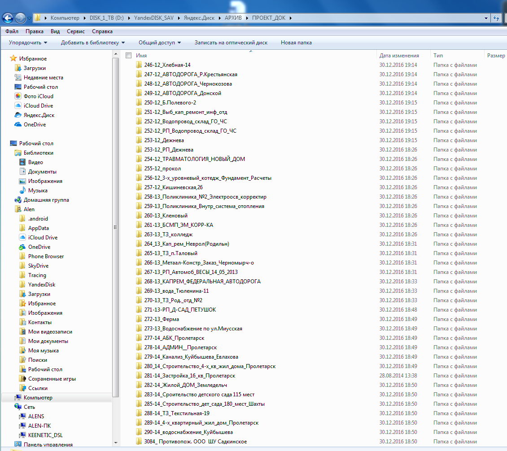

|
|
Архив проектной документации на строительство (реконструкцию, капремонт) гражданских и производственных объектов, включая дома, коттеджи, линейные - инженерные сети и автомобильные дороги. |
|
В архиве представлены проекты на строительство
(реконструкцию, капремонт) гражданских, и производственных объектов,
включая дома, линейные - инженерные сети и автомобильные дороги. АРХИВ_ПРОЕКТ_ДОК4_(2-й уровень) Аннотация проекта коттеджа (продолжение) |
|
 |